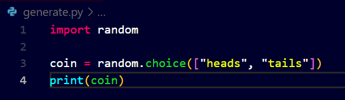

See the syntax of using random in actual code:
- random.choice(seq)
- What does the above code says is: "The module 'random' contains the function choice() with a parameter sequence {seq} = list


- Now watch here how I am using the import keyword for using the function choice() from the module random.
- But i have to everytime type random.choice() to specify exactly from which module the function choice is coming for python.
- So what could we do instead is use another keyword that is "from".
- The "from" keyword allows us to use a function from a certain module. See how...

Output remains the same. But now I don't need to type again and again the name of module I am using the function from.
Another function from random module is random.randint(a, b)
This function returns value from the range of the number a and the number b including both the numbers a and b.
See how..


Another function is random.shuffle(x) here we can shuffle the contains of a list using this function actually this function does not return any value after shuffling so we need to print the shuffled list one at a time using a loop because python formats the list by its own.
See how...


Statistics is another Module/Library in python which is commonly used for analysing data and getting statistical outputs or results based on our data.
Here we use the mean function available in module statistics for calculating mean of the given list.


There is one more feature known as command-line arguments which allow you to execute commands just exactly while executing the program.
We can input exactly while the program is running.
for example python hello.py .... we can pass input function here just see how....
We use sys module in python there is a magical variable that exists, called argv the variable is "sys.argv" which is a list


Just see here how we have given input name David after typing python name.py David which directly stores value of the user's name in the variable sys.argv.
- Now watch carefully that here in the program above we have passed the parameter to be printed as 1.
- Because in previous programs we have seen that loops start their indexing from 0, so here in sys.argv[0] the variable is basically a list so it stores the file name first, then second comes the parameter we pass that is the name of the user.
- The benefit is that we can actually access the words that are typed after the prompt in the command line.

This is a common error we encounter in python when we go to far in the left or right in the program limit.
Atleast the user doesn't see an error now


See how we handle this error without using exceptions:


Now there is another function known as sys.exit() , as the name suggests it particularly tells the program when to exit on a line.
 Works the same!!
Works the same!!Now what we will do is just suppose we do not want to take arguments only for David, we want to take multiple input arguments say for Jacob, James, Harry etc. So see what we do...
- Here, furthermore we do not want to limit the maximum number of words typed in so we remove the elif part.
- To print each name given as the input argument we create a for loop which will iterate over each of the names in the list(sys.argv).
- But watch how instead of 3 we got 4 names printed in the terminal, this is because the filename is the very first value in it.


Watch how we overcome ths problem using another feature of python, slices!!!
This will give us a slice of the list.. see how!


We can Slice the list from beginning, between, and from end. Just by changing the syntax as follows: sys.argv[1:-1] for slicing the end part.
Now moving further we discuss about packages in python.
Packages are third party libraries that we can install on our systems and use even more functionalitieswhich are created or developed by others.
A website to access different types of packages is PyPi site: pypi.org. His allows us to download all types of packages.
Nowadays python and many other languages come with a new feature called package manager which helps us manage packages by itself.
In Python it is called pip.
For fun see this package named cowsay which literally shows a message that a cow says!!!
Its known as ascii art i.e., using only keyboard symbols.


There is another function in the cowsay package which is trex!!


Isn't it amazing?
Another Important feature is APIs it is Application Programming Interface which is basically python files or functions.
But many times APIs refer to third party services that we can write code that talk to a browser or a service and can download some that incorporates in your own program.
Now in Python you have a Library requests which allows you to make web requests or internet requests using the python code essentially as you were a browser yourself , which helps us to start automating requests to access URLs that start with http or https.
This too can be used from command line and you can find the documentation here:
requests
JSON: JavaScript Object Notation used as Language Agnostic Format for exchanging data between computers.
API: A mechanism whereby I can access data located at someone else's server and integrate it in my program.
As chrome is not created by me I need to write some python code which actually pretends to be a browser and accesses this data.
Now Apple has a Database for its users that allows users to access the songs in it when they type the following
https://itunes.apple.com/search?entity=song&limit=1&termweezer
Now here entity = song, limit tells the number of songs, and term asks you the band or the name of the singer.
See how the link returns a JSON file when we access this database link using python program that pretends to be a program, where we ask the singer's name to the user.


Now here you can clearly see that the result is just a mess of json code, but notice carefully its a python dictionary!!
We can little bit indent it and make it more clear just see how!


See how we extract 50 songs..


That's the power of libraries.
Now see how we can create our own libraries using python:
For example consider we want to create a library where we make functions for saying Hello and goodbye to the user when the functions are called.
See how..


Here we have created a main function for simplicity and sake of easily organising our functions in desired order.
We call the main function at the end of the program.
Now lets use this library in another program!!
See how it works..


Ohhh! What has gone wrong? Now it seems that we cannot call the main() function just that simply at the end of the program because then when the python reads program from top to bottom, left to right, the main() function gets executed no matter what.
What we can do to solve it? Watch another feature of python another keyword reserved for a variable:
Here as shown below the variable __name__ is a special symbol in python that tells python that when __name__ == "__main__" then and only then you should execute the main function.


- This variable is a special variable whose value is automatically set by python to be "main" when yourun a file from command line.

- Notice that when we run python of sayings.py the program stills runs perfectly fine.
- Because name is automatically set to main when we run this same file from command line.
- But now When we import this library in another program the name is not going to be set to main, it will probably set to the name of the module.
- In this case "sayings" name of the module.


So here the program only says hello to the user.
We ca do the same with goodbye function see how..